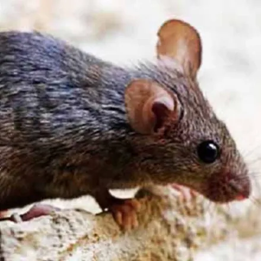
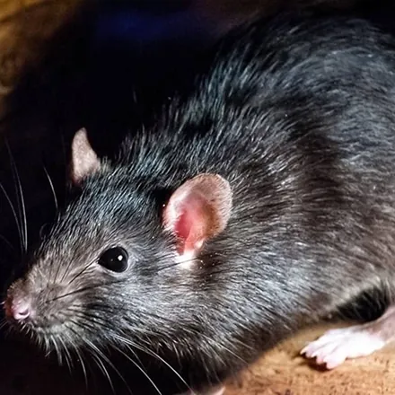

صدای خشخش از سقف کاذب، فضولات ریز در کابینت یا سیم جویدهشده در پارکینگ؛ اینها یعنی جوندگان به ملک شما راه پیدا کردهاند. موشها هوشمندترین آفت شهریاند: از سوراخی به اندازهٔ یک سکه عبور میکنند، از تلههای ناشیانه درس میگیرند و با سرعتی باورنکردنی زاد و ولد میکنند. در این راهنما انواع موشهای رایج، نشانههای آلودگی، بیماریها، اصول تلهگذاری و روند دفع تخصصی موش در کرج را بررسی میکنیم.
شناخت جوندگان و انواع رایج آنها در ایران
جوندگان پستاندارانی با دندانهای پیشین همیشه در حال رشدند؛ به همین دلیل مدام میجوند — سیم برق، لولهٔ آب، چوب و حتی بتن سبک. در ساختمانهای شهری سه گونه بیش از بقیه دیده میشود و شناخت آنها مستقیماً روی انتخاب روش دفع اثر دارد:
| ویژگی | موش خانگی | موش نروژی (قهوهای) | موش سیاه (بام) |
|---|---|---|---|
| اندازه بدن | ۷ تا ۱۰ سانتیمتر | ۲۰ تا ۲۵ سانتیمتر و تنومند | ۱۶ تا ۲۰ سانتیمتر و باریک |
| محل زندگی | داخل خانه، کابینت و انباری | فاضلاب، پارکینگ، زیرزمین و باغچه | سقف کاذب، بام و درختان |
| توانایی شاخص | عبور از سوراخ به اندازه سکه | حفر لانه در خاک و نقب زدن | بالا رفتن ماهرانه از دیوار و کابل |
| نشانه رایج | فضولات ریز در کابینت | لانه و مسیر چرب کنار دیوار زیرزمین | صدای دویدن در سقف هنگام شب |
نکتهٔ نگرانکننده دربارهٔ همه این گونهها سرعت تولیدمثل است: یک جفت موش در شرایط مساعد میتواند در یک سال دهها سر جمعیت تولید کند؛ بنابراین «فقط یک موش دیدم» تقریباً هیچوقت یعنی فقط یک موش.
نشانههای آلودگی به موش
- فضولات: دانههای تیره دوکیشکل در کابینت، کشوها و کنار دیوارها؛ تازه بودن فضولات نشانه فعالیت فعلی است.
- آثار جویدن: روی سیمها، بستههای مواد غذایی، چوب و پلاستیک.
- صدای خشخش و دویدن: شبها از سقف کاذب، دیوارها یا انباری.
- رد پا و خط چربی: موشها همیشه از مسیر ثابت کنار دیوار حرکت میکنند و لکهٔ چرب تیرهای به جا میگذارند.
- لانه: تودهای از کاغذ و پارچه جویدهشده در نقاط پنهان.
- بوی زننده آمونیاکی: از ادرار موش در فضاهای بسته.
خطرات و بیماریهای ناشی از جوندگان
- بیماریهای عفونی: جوندگان ناقل لپتوسپیروز، سالمونلوز، تب گزش موش و در طول تاریخ طاعون بودهاند؛ آلودگی از راه ادرار، مدفوع، گزش یا انگلهای روی بدن آنها منتقل میشود.
- آلودگی مواد غذایی: هر بستهای که موش جویده باید دور ریخته شود؛ آلودگی به فضولات از چشم پنهان میماند.
- خطر آتشسوزی و خسارت: جویدن سیمهای برق از علل شناختهشدهٔ اتصالی و حریق است؛ لولههای آب و عایقها هم در امان نیستند.
- انگلهای همراه: کک و کنه از بدن جوندگان به محیط و حیوانات خانگی منتقل میشوند.
- آسیب به اعتبار کسبوکار: مشاهده موش در انبار یا رستوران میتواند به تعطیلی موقت در بازرسی بهداشتی منجر شود.
راههای پیشگیری از ورود موش
- درز زیر درها را نوار آستانه بزنید و سوراخ محل عبور لوله و کابل را با توری فلزی و سیمان پر کنید؛ مواد نرم مانند فوم را موش میجود.
- زباله را در سطل دردار نگه دارید و شبها خارج کنید.
- مواد غذایی و غلات را در ظروف فلزی یا شیشهای دربسته انبار کنید.
- ظرف غذای حیوانات خانگی را شبها جمع کنید.
- اطراف ساختمان را از علف هرز، آوار و اجناس انباشته پاک نگه دارید و شاخههای چسبیده به بام را هرس کنید (مسیر ورود موش سیاه).
- دریچههای کولر و فاضلاب را با توری مقاوم بپوشانید.
تلهگذاری خانگی و محدودیتهای آن
برای یکی دو موش خانگی، تلهٔ مکانیکی یا چسبی که در مسیر حرکت (چسبیده به دیوار) و با طعمهٔ مناسب گذاشته شود، معمولاً جواب میدهد. اما محدودیتها جدی است: موشها بهسرعت نسبت به تله محتاط میشوند و از تلهای که موقعیتش را لو داده دوری میکنند؛ طعمهٔ مسموم باز در خانه برای کودک و حیوان خانگی خطرناک است و ممکن است جونده در جای غیرقابل دسترس تلف شود و بوی لاشه و هجوم مگس مشکل تازهای بسازد؛ و دستگاههای التراسونیک بهتنهایی اثر پایداری ندارند. مهمتر از همه: تا وقتی راه ورود باز است، حذف موشهای فعلی فقط جا را برای موشهای بعدی خالی میکند.
روند دفع تخصصی جوندگان در آرام محیط البرز
آرام محیط البرز با مجوز رسمی وزارت بهداشت، درمان و آموزش پزشکی و مدیریت مهندس فاطمه براتی، کارشناس بهداشت محیط، کنترل جوندگان را در منازل، انبارها، رستورانها و مجتمعهای کرج به این ترتیب انجام میدهد:
۱. مشاوره و بازدید رایگان
کارشناس گونهٔ جونده، مسیرهای تردد و راههای ورود را شناسایی میکند و نقشهٔ تلهگذاری و هزینه را پیش از شروع کار بهصورت شفاف اعلام میکند.
۲. تلهگذاری و طعمهگذاری اصولی
ترکیبی از تلههای مکانیکی و ایستگاههای طعمهٔ قفلدار با طعمههای مجاز، در مسیرهای تردد نصب میشود؛ محل همه ایستگاهها ثبت میشود و در محیطهای دارای کودک و حیوان خانگی فقط از روشهای ایمن استفاده میشود. همزمان راههای ورود برای مسدودسازی به شما اعلام میشود.
۳. پیگیری، جمعآوری و ضمانت کتبی
در مراجعات پیگیری، تلهها بازبینی و لاشهها بهصورت بهداشتی جمعآوری میشوند و در پایان کار، ضمانتنامه کتبی دریافت میکنید.
عوامل مؤثر بر هزینه دفع موش در کرج
- مساحت ملک و تعداد فضاهای درگیر (منزل، انبار، محوطه).
- گونهٔ جونده و شدت آلودگی.
- تعداد ایستگاهها و تلههای موردنیاز.
- تعداد مراجعات پیگیری و قرارداد دورهای برای اصناف.
جمعبندی و راه ارتباط
دفع موش یک عملیات سهمرحلهای است: شناسایی مسیرها، حذف جمعیت با تله و طعمهٔ اصولی و مسدودسازی راههای ورود؛ حذف هرکدام یعنی بازگشت آلودگی. اگر در خانه، انبار یا مغازهٔ خود در کرج نشانههای موش دیدهاید، برای بازدید و مشاوره رایگان با کارشناسان آرام محیط البرز تماس بگیرید: 09193613357 و 026-34209019. برای آفتی که معمولاً پابهپای موش در ساختمانها دیده میشود، راهنمای سمپاشی سوسک در کرج را هم بخوانید.
سوالات متداول دفع موش
بهترین روش دفع موش چیست؛ تله یا طعمه مسموم؟
هیچکدام بهتنهایی کافی نیست و انتخاب به محیط بستگی دارد: در فضای داخلی منزل معمولاً تلههای مکانیکی و چسبی امنتر و قابل کنترلترند، در انبارها و محوطهها ایستگاههای طعمهگذاری نتیجه بهتری میدهند. مهمتر از ابزار، مسدود کردن راههای ورود است؛ وگرنه موشهای جدید جایگزین میشوند.
آیا طعمه موش برای کودکان و حیوانات خانگی خطر دارد؟
طعمههای جوندهکش در صورت خورده شدن برای انسان و حیوان خطرناکاند؛ به همین دلیل در روش تخصصی، طعمه فقط داخل ایستگاههای مخصوص قفلدار و در نقاط دور از دسترس گذاشته میشود و محل همه ایستگاهها ثبت و در پایان جمعآوری میشود. هرگز طعمه باز را در خانهای که کودک یا حیوان دارد رها نکنید.
موش از کجا وارد خانه میشود؟
موش خانگی از سوراخی به اندازه یک سکه و موشهای بزرگتر از حفرهای به قطر چند سانتیمتر عبور میکنند. مسیرهای رایج عبارتاند از: درز زیر درها، محل عبور لولهها و کابلها، کانال کولر، شبکه فاضلاب و سوراخهای دیوار انباری و پارکینگ. مسدودسازی این نقاط با توری فلزی و سیمان، پایه اصلی دفع موش است.
اگر موش داخل دیوار یا سقف کاذب بمیرد چه میشود؟
لاشه موش بوی بسیار بد و ماندگاری تولید میکند و ممکن است باعث هجوم مگس شود. در روش تخصصی، محل تقریبی لاشه از روی بو و رد فعالیت شناسایی و در صورت امکان خارج میشود و محل ضدعفونی میگردد؛ به همین دلیل نوع و محل طعمهگذاری از ابتدا طوری انتخاب میشود که احتمال مرگ جونده در نقاط غیرقابل دسترس کم باشد.
هزینه تلهگذاری و دفع موش در کرج چقدر است؟
هزینه به مساحت محیط، نوع جونده، شدت آلودگی، تعداد ایستگاههای موردنیاز و تعداد مراجعات پیگیری بستگی دارد. بازدید و مشاوره کارشناسان آرام محیط البرز رایگان است و قیمت پیش از شروع کار بهصورت شفاف اعلام میشود. برای استعلام با شماره 09193613357 تماس بگیرید.